약력 · 상세 (한 줄에 하나씩. 왼쪽 칸은 연도나 항목, 오른쪽 칸은 내용)

시선이 작품이 되는 곳,
파르라니
문의가 잘 전달됐어요. 확인하고 연락드릴게요.
사진과 캡션을 고치면 바로 저장되고, 갤러리에 곧바로 반영돼요.
첫 화면에 걸리는 전시 포스터예요. 포스터 · 제목 · 날짜 · 장소를 직접 쓰고, 전시에 나온 작품을 넣고 뺄 수 있어요. 순서는 위에서부터 첫 화면에 걸려요.
News 페이지에 나오는 소식이에요. 날짜가 최근인 소식이 위에 나와요. 사진과 링크는 넣지 않아도 돼요. 쓰면 바로 저장되고, 공개 사이트(parranii.com)에는 ‘사이트 반영하기’를 하면 올라가요.
Works의 포스터(묶음)예요. 묶음을 만들거나 이름 · 포스터를 바꾸고, 작품을 다른 묶음으로 옮길 수 있어요. 직접 옮긴 작품은 재료와 상관없이 그 묶음에 있어요.
About 페이지에 나오는 글이에요. 쓰면 저장되고, 위쪽 메뉴의 about에서 바로 볼 수 있어요. 아래 ‘전시 이력’은 전시 탭의 내용으로 자동으로 채워져요.
Contact 페이지의 ‘문의하기’로 들어온 내용이에요. 최근 문의가 위에 나와요. 구글 시트에서도 같은 내용을 볼 수 있어요.
방문자가 Guestbook 페이지에 남긴 글이에요. 보이기 싫은 글은 ‘숨기기’를 누르면 사이트에서 바로 사라져요(지워지지는 않아서 ‘다시 보이기’로 되돌릴 수 있어요).
Contact 페이지에 나오는 글이에요. 쓰면 저장되고, 위쪽 메뉴의 contact에서 바로 볼 수 있어요. 항목마다 종류(연락처 · 이메일 · 위치 …)를 고르거나 직접 쓰고, 옆 칸에 내용을 적어요. 이메일과 연락처는 누르면 바로 메일 · 전화로 이어지고, https:// 로 시작하면 링크가 돼요.